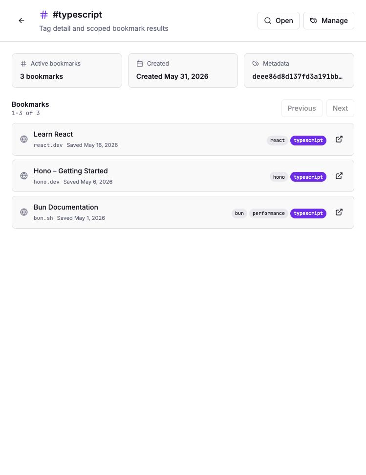
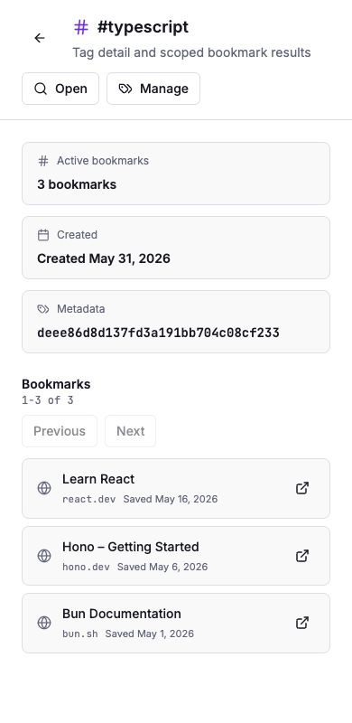

Grimoire Task Report
Tag Detail Pages

Before
Tags had a management page and library filter links, but there was no stable route for a tag itself. Bookmark tag chips were static labels rather than navigation targets.
Problem
TASK-099 needed a first-class /tags/:tag view so users can open a tag, see its active count and created metadata, and browse matching bookmarks without relying only on the main library filter.
Changes Added
- Added the
/tags/:tagroute and a dedicated tag detail page. - Loaded tag metadata from
GET /tagsand scoped bookmarks fromGET /bookmarks?tag=&limit=&offset=. - Added loading, unavailable, missing-tag, empty-bookmark, and paginated-list states.
- Changed tag management rows to open tag detail pages.
- Changed bookmark card tag chips into stable links to their tag detail pages.
Result
Browsing
Users can open /tags/typescript, jump back to the filtered library, or return to tag management from one focused surface.
Pagination
The bookmark list uses daemon pagination and resets offset per tag so scoped lists stay consistent as users move through pages.
Verification
npm run test -- src/pages/TagDetail.test.tsx src/pages/Tags.test.tsx src/components/BookmarkCard.test.tsxnpm run lintpassed with existing Fast Refresh warnings only.npm run type-checknpm run buildpassed with the existing Vite chunk-size warning.npm run test:e2e- Visual desktop and narrow checks passed against an isolated loopback daemon and Vite dev server; browser console error log count was zero.
Additional Screenshots

Files Changed
src/App.tsxsrc/pages/TagDetail.tsxsrc/pages/TagDetail.test.tsxsrc/pages/Tags.tsxsrc/pages/Tags.test.tsxsrc/components/BookmarkCard.tsxsrc/components/BookmarkCard.test.tsxdocs/parity/grimoire-feature-parity-report.mddocs/parity/grimoire-parity-task-proposals.mddocs/task-reports/index.htmldocs/task-reports/2026/index.htmldocs/task-reports/2026/05/index.htmldocs/task-reports/2026/05/2026-05-31-task-098-tag-management-surface/index.htmltasks/README.mdtasks/done/TASK-098-tag-management-surface.mdtasks/done/TASK-099-tag-detail-pages.md